English · 01Happy
I never thought I’d see you here again, but now that you’re standing in front of me, all those old memories suddenly feel wonderful.
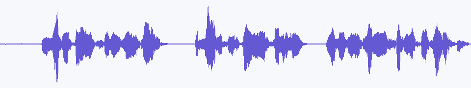
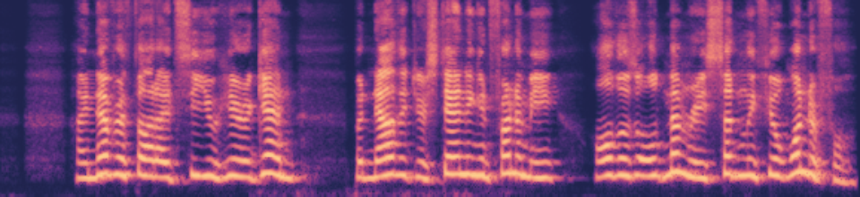
Wavelet-Factorized Autoregressive Mel-Spectrogram Modeling for Zero-Shot Speech Synthesis
Explore zero-shot voice cloning and expressive speech synthesis. Listen to the generated audio and inspect its waveform and Mel spectrogram.
Zero-shot voice cloning on the Seed-TTS-eval benchmarks. VoxMel is the 690M supervised model; VoxMel + GRPO adds frozen-head GRPO post-training. Both decode with 32 solver steps at guidance (3.5, 3.0).
| Prompt | Text | VoxMel | VoxMel + GRPO | VoxCPM-Emilia | VoxCPM | MaskGCT | CosyVoice 2 | IndexTTS 2 |
|---|---|---|---|---|---|---|---|---|
| After his execution Ogilvie's followers were rounded up and put in jail. | ||||||||
| Rooftop Mounted for homes with no attics. | ||||||||
| He later worked as a journalist, and then became a novelist and playwright. | ||||||||
| Images of the pre-rendered cinematics also began to appear at this time. | ||||||||
| Over time the couple has four more children, although William never warms to them. | ||||||||
| Some transferred the conclusion to Ibsen, his translators and his director. |
Scroll horizontally to compare all systems.
| Prompt | Text | VoxMel | VoxMel + GRPO | VoxCPM-Emilia | VoxCPM | MaskGCT | CosyVoice 2 | IndexTTS 2 |
|---|---|---|---|---|---|---|---|---|
| 因为眼前奥斯比约恩的鱼篓里，就躺着一个活生生的小人。 | ||||||||
| 毒虫把毒品丢进马桶冲走，未料毒品又浮出水面，让警方逮个正着。 | ||||||||
| 人们建造了一座带教堂的医院，奉献给圣约然。 | ||||||||
| 本文旨在以苏联解体后，陆续解密的档案材料为根据。 | ||||||||
| 在妙手盘丝环节中，男嘉宾需要两位尖果选手盘发。 | ||||||||
| 一点五公里后，右转驶入京藏高速辅路。 |
Scroll horizontally to compare all systems.
Each reference voice is used for both same-language and cross-lingual synthesis. Compare how VoxMel preserves speaker identity while switching between Chinese and English.
| Reference prompt | Same-language text (EN) | VoxMel · Same | Cross-lingual text (ZH) | VoxMel · Cross |
|---|---|---|---|---|
| I don't really care what you call me. I've been a silent spectator, watching species evolve, empires rise and fall. But always remember, I am mighty and enduring. Respect me and I'll nurture you; ignore me and you shall face the consequences. | 顿时，气氛变得沉郁起来。乍看之下，一切的困扰仿佛都围绕在我身边。我皱着眉头，感受着那份压力，但我知道我不能放弃，不能认输。于是，我深吸一口气，心底的声音告诉我：“无论如何，都要冷静下来，重新开始。” | |||
| Perhaps they are driven by the delicious blend of flavors, or it could be the appealing visual presentation. At the end of the day, our choices in food reflect our personal preferences and sometimes, even our lifestyle or belief system. | 我抬起头，坚定地说：“身高不能决定一切，这世界在看我，我更看得到世界。无论是北上广，或是别的什么，我都将以我自己的方式去攀爬，去追逐。我可能小，但我绝不会被忽视。” | |||
| Your safety and the pack's reputation are at stake. Your bravery is admirable, but sometimes bravery is knowing when to retreat. Please, consider returning with me. We can work out a plan, but only if you're willing to listen. | 你的勇敢令人钦佩，但有时候勇敢在于懂得何时撤退。拜托，考虑一下和我一起回去吧。我们可以制定一个计划，但前提是你愿意倾听。 |
| Reference prompt | Same-language text (ZH) | VoxMel · Same | Cross-lingual text (EN) | VoxMel · Cross |
|---|---|---|---|---|
| 我看着他们，意气风发地挺直了胸膛，甩了甩那稍显肉感的双臂，轻笑道：“我身上的肉，是为了掩饰我爆棚的魅力，否则，岂不吓坏了你们呢？” | Suddenly, there was a burst of laughter beside me. I looked at them, stood up straight with high spirit, shook the slightly fleshy arms, and smiled lightly, saying, “The flesh on my body is to hide my bursting charm. Otherwise, wouldn't it scare you?” | |||
| 顿时，气氛变得沉郁起来。乍看之下，一切的困扰仿佛都围绕在我身边。我皱着眉头，感受着那份压力，但我知道我不能放弃，不能认输。于是，我深吸一口气，心底的声音告诉我：“无论如何，都要冷静下来，重新开始。” | Suddenly, the atmosphere became gloomy. At first glance, all the troubles seemed to surround me. I frowned, feeling that pressure, but I know I can't give up, can't admit defeat. So, I took a deep breath, and the voice in my heart told me, “Anyway, must calm down and start again.” | |||
| 皇上的面色未变，宛如雕塑般静止，他的眼中闪过一丝动人的温度。他深深地看了那位忠心耿耿的臣子一眼，终于开口：“诺，我会再考虑考虑的。”他的声音低沉且坚定，留下空气中隐隐的无奈与柔情。 | The emperor's complexion did not change, remaining as still as a sculpture, and a touch of touching warmth flashed in his eyes. He deeply glanced at the loyal minister, and finally spoke: “Well, I will consider it again.” His voice was low and firm, leaving a faint hint of helplessness and tenderness in the air. |
Scroll horizontally to compare same-language and cross-lingual outputs.
Additional expressive zero-shot synthesis samples. Each card includes the reference prompt, generated speech, and switchable waveform and Mel-spectrogram views.
I never thought I’d see you here again, but now that you’re standing in front of me, all those old memories suddenly feel wonderful.


So you finally decided to come back. After everything you did, do you really expect me to stand here and pretend nothing happened?
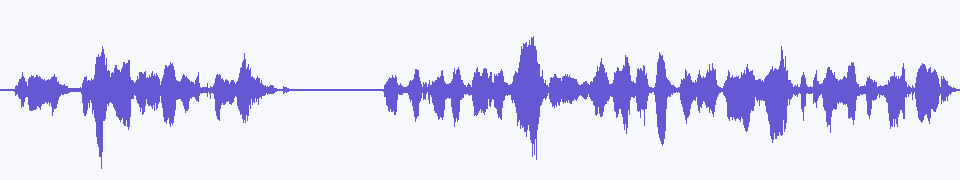
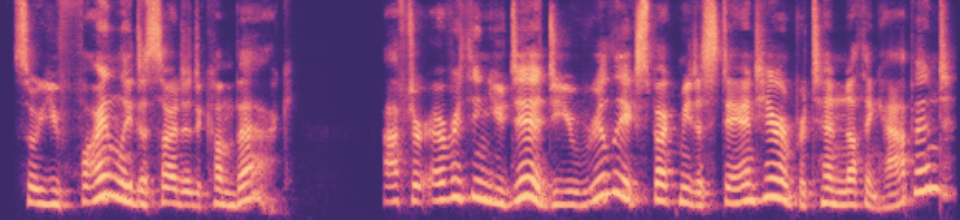
They told me this place was empty, but there is a light in the front room, and I can hear someone moving quietly inside.
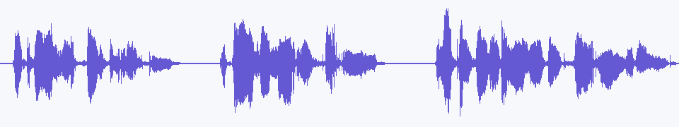
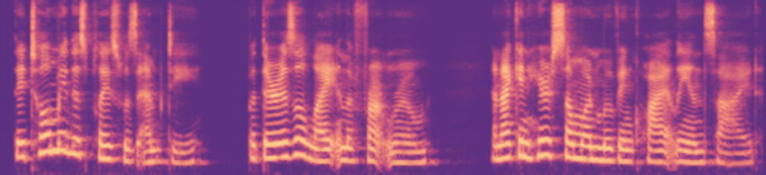
Someone has been living in this filthy place all along. The smell is unbearable, and those marks on the walls make me sick.
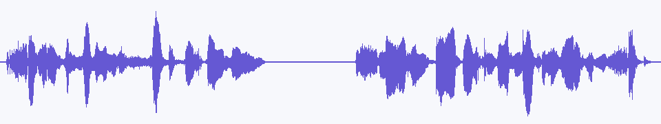
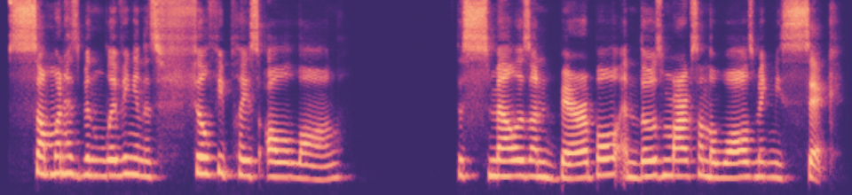
Look around at everything we built together. You don’t get to tear it apart now, and I’m certainly not walking away just because you told me to.
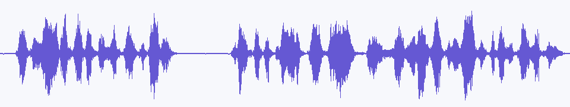
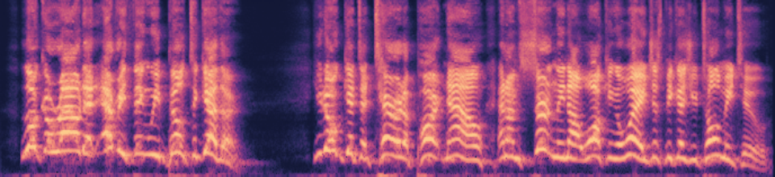
The last train is leaving, so take your time and tell me what you came here to say. I’ll listen before you go.
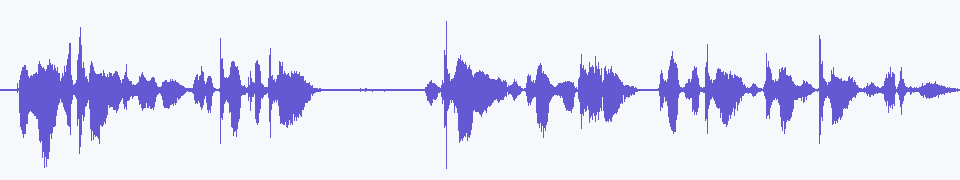
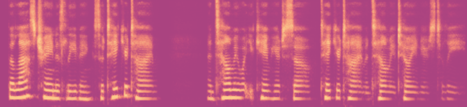
我习惯每天这个时候来这里坐一会儿，看看路过的人，等街边的灯一盏一盏亮起来。
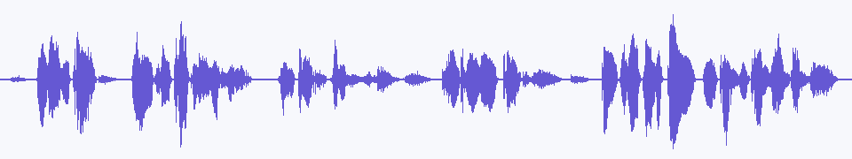
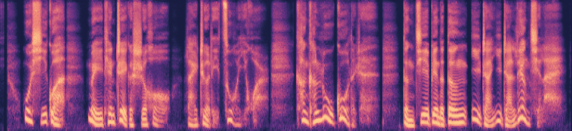
我习惯每天这个时候来这里坐一会儿，看看路过的人，等街边的灯一盏一盏亮起来。
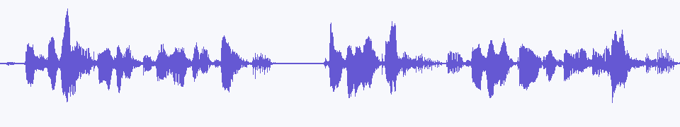
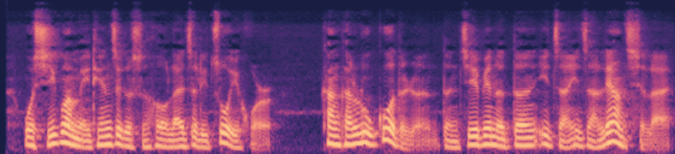
你看，我们真的做到了。以前觉得不可能的事，现在就在眼前，我简直想把这个好消息告诉所有人。
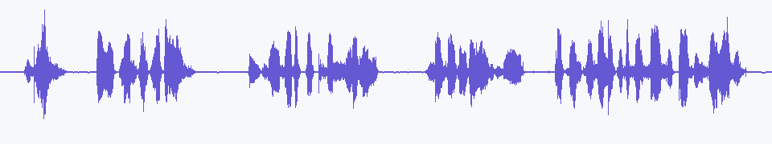
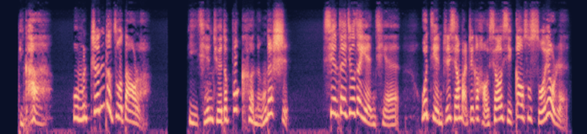
那张车票我一直留着，可我们现在连好好说一句话，都变得这么难。
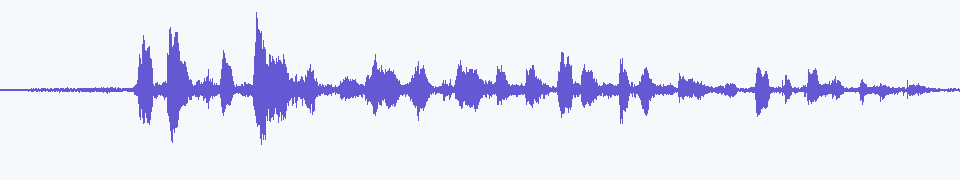
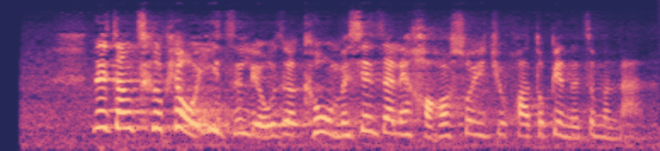
我已经一次次向你们反映，可你们谁都不管！我们努力了这么久，难道最后连一个解释都不配得到吗？
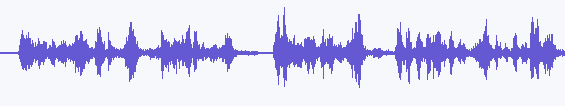
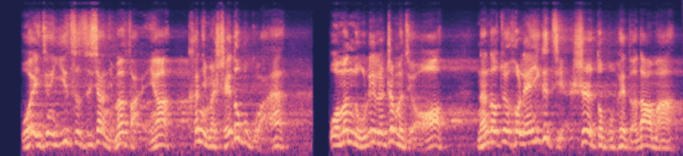
他的性格你又不是不了解，他根本不会通融。可这不是你们逃避责任的理由，今天必须给我一个交代。
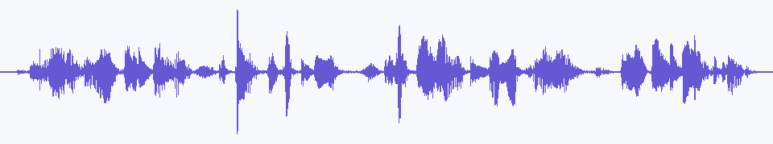
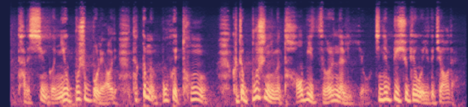